Why this exists
Claude Code is easiest to misread as a feature list. The useful question is not whether the tool exists — it is whether you can structure work around it reliably enough to trust the results.
Feature-list thinking
46% of developers do not trust AI output. Most of that distrust is earned the hard way.
Workflow thinking
Structured habits that make results trustworthy — that is what this walkthrough is about.
What this is
Core emphasisA guide to working with Claude Code well: shaping tasks, inspecting context, reviewing output, and building habits that hold up on real work.
It is written for software developers, data scientists, full-stack builders, and less-code-heavy technical roles, across junior, mid-level, and senior experience levels.
What this is not
What to use insteadIt is not a feature tour, not a coding course, and not a substitute for the official docs when you need exact setup steps, product behavior, or reference detail.
It also is not marketing. If something only works under ideal prompting or vague examples, this walkthrough is not interested in pretending otherwise.
From coding friction to coding agents
Coding is easy to misread as a syntax problem. In practice it is the work of turning intent into a maintainable, testable, deployable system — and most of the friction lives outside the implementation stage.
The first version is rarely the real problem. The operational burden comes afterward: clarifying moving requirements, reconstructing why a choice was made, tracing failures across tools and files, absorbing QA feedback, and handing the work over without losing context.
This is not a story of no progress. Each generation removed real friction. The limitation was that most of those gains stayed local: better syntax help, better boilerplate, better examples, better draft code.
The useful shift was not just better text completion. The model stopped being only a next-token helper and started behaving more like a system that could take a goal, absorb context, use tools, and iterate. Four capabilities compounded to make that possible.
Before — code alone
Earlier tools could only reach the implementation layer. Domain rules, intent, and decisions lived outside.
After — code + domain rules
A model that can hold goals, absorb context, and use tools can work across both layers at once — which is what most software actually is.
Where teams adopted first
Not just writing code faster — these tasks were text-heavy, repetitive, and mentally expensive.
Why the ROI held up
Output could be checked through builds, tests, lint, diffs, and review — rare in knowledge work.
That is the arc the next sections build on. Coding stayed hard because the burden was operational, earlier tools solved important but narrower problems, software turned out to be one of the clearest high-ROI LLM environments, and tools like Claude Code emerged when models could finally inspect, edit, run checks, and iterate inside that code-centered loop.
What using Claude Code well looks like
Claude Code runs a loop: inspect → plan → edit → verify → review. The model reasons at each step; the loop — not the model tier, not the feature list — is the unit of work.
Skip inspection
Agent goes straight to an edit — guessing at root cause. Workarounds, scope drift, and hard-to-reverse changes follow.
Good inspection returns
range(len(items) - 1) instead of range(len(items))) before any edit was proposed.
Prompt to try:
Explore this repo. Show me the file structure, read the source code and tests, identify any failing tests, and give me the root cause. Do not edit anything.
A well-formed plan names a specific file, line, change, and why. If any field is vague, reshape the prompt before approving.
src/calc.py
Line16
Changerange(len(items) - 1) → range(len(items))
Whyloop bound truncates last item; body is already correct
Once the plan is approved, the agent makes the edit. Edits that expand beyond the proposal signal the Plan step wasn't tight enough.
Watch the diff for scope creep
Any of these means scope wasn't bounded tightly enough in the Plan step. Catch them at review, not after deploy.
src/calc.py. No other files were touched. The diff matched the plan exactly.
Verification means running the test suite and reading the result. A pass is evidence the change is correct for the covered cases — not proof of full correctness, which is why the Review step follows.
$ python -m pytest tests/ -v ... tests/test_calc.py::test_running_total PASSED 4 passed in 0.05s
pytest tests/ -v reports 4/4 passed in 0.05s.
Tests passing means the code is correct for the test suite. Review is where the human decides whether it is correct for the actual requirement. Read the diff. Check scope matches plan. Look for coupling or anything hard to reverse.
What the human checks
Shape the task and bound the scope
Vague prompts produce vague results — not because the model is limited, but because the loop can’t scope what it hasn’t been told to look at.
Shape the task
Inspect before acting. Name the root cause, not the symptom.
Bound the scope
Name the files, name the constraint, tell it what not to touch.
Vague prompt
Fix the bug in the calculator.
Agent response (CLI capture):
I need permission to edit the file. The bug is in src/calc.py:16 — range(len(items) - 1) should be range(len(items))...
Jumped straight toward an edit — no inspection, no named scope, no plan step. Human had no checkpoint.
Shaped + scoped prompt
Inspect src/calc.py and tests/test_calc.py. Identify the failing test and the root cause. Do not edit yet — give me the smallest single-line change that would fix it, and explain why that change and no other.
Agent names the root cause, proposes one line, justifies why no other lines need changing, and waits. The human approves before anything is written to disk.
Verify, review, and manage context
Three small disciplines close the loop. Verify runs the tests — not eyeballs the code. Review reads the diff — not trusts the summary. Manage context gives the agent the right files, not all the files. Each discipline is quick to apply and expensive to skip.
Run the tests, not your eyes
After an edit, run the test suite. A passing test is evidence the change is correct for the covered cases. An eyeball check is pattern-matching against what you expect — which is exactly what the bug looked like before it was found.
$ python -m pytest tests/ -v ... tests/test_calc.py::test_running_total PASSED 4 passed in 0.05s
Read the diff, not the summary
The diff is the contract. Read it before accepting. Check that it matches the plan proposal, touches only the named files, and contains no bundled style changes, refactors, or scope creep.
--- a/src/calc.py +++ b/src/calc.py - for i in range(len(items) - 1): # BUG: off-by-one + for i in range(len(items)):
What the human checks
Right files, not all files
Filling the context window with unrelated files degrades every reasoning step that follows. For the tier1-basics demo, two files were sufficient: src/calc.py and tests/test_calc.py. Nothing else improved the output.
Anti-pattern
Drag in all open files, the whole repo tree, unrelated logs — hoping "more context = better answer."
Discipline
Name only the files relevant to this task. Add files as the agent asks for them, not preemptively.
Anthropic's interactive context simulator shows exactly how context is consumed: docs.anthropic.com — context management
Verified. Reviewed. With the right context, not all context.
These three steps close the loop and keep the human responsible for what ships.
Part 2 complete · Part 3 now opening
The Claude Code surface
This is your cockpit orientation. Before any prompts, any sessions, any code changes — know where things live. Work through the four views below and you'll be ready to run your first session with confidence.
What you'll be able to do after this section
Claude Code is a VS Code side panel where your entire loop with the agent runs: write a prompt, watch it plan step-by-step, approve or reject its proposed actions, inspect the diff, commit. Every step is visible here — nothing lands in your codebase without your say.
Throughout this section you'll see links to code.claude.com/docs — the authoritative Claude Code reference. Always go there first for the latest.
Anthropic also runs Anthropic Academy with free courses and certificates — including a dedicated Claude Code in action ↗ course for going deeper beyond this walkthrough.
The conversation panel
The Claude Code panel opens in the VS Code sidebar. Your prompt goes in the input field at the bottom. Plan proposals, tool calls, and responses appear in the conversation area above. A context indicator at the top of the panel shows how much of the token window is consumed — the number to watch as a session grows.
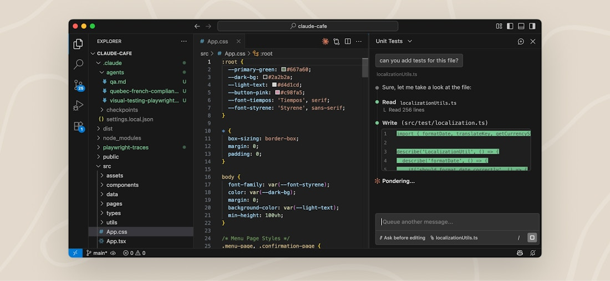
Official screenshot — code.claude.com/docs/en/vs-code ↗
Session resume and fork
Each Claude Code conversation is a session — saved continuously to disk as you work. When you return, you have two paths: resume picks up the exact thread; fork branches off with the same context intact so you can try a different direction without overwriting the original.
~/.claude/projects/Continue the same thread. All messages, file references, and approved actions remain in context.
claude --continue
New session with same starting context. Original thread preserved — try a different approach, A/B-test two directions.
/branch <name>
Resume entry points — quick reference
claude --continue
resume the most recent session in the current directory
claude --resume
open the interactive session picker
claude -n auth-refactor
start a new named session (findable later in the picker)
/resume
switch sessions from inside an active conversation
Context management inside a session
/clear — fresh context, session saved
/compact — summarise history, keep going
/context — see what's using the window
Full reference: code.claude.com/docs/en/sessions ↗
Agent view — all your sessions in one screen
One screen for every background session: what's running, what needs your input, what's done. Dispatch new tasks, watch their state update in real time, and step in only when a session needs you — without switching windows or losing context in another.
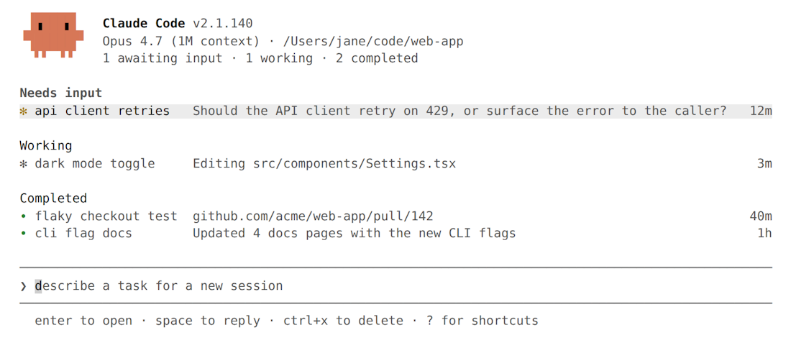
Official screenshot — code.claude.com/docs/en/agent-view ↗
What you're reading — sessions grouped by state
Pinned ✽ clawd walk cycle Write assets/sprites/clawd-walk.png 3m Ready for review ∙ jump physics github.com/example/game/pull/2048 ● 2h Needs input ✻ power-up design needs input: double jump or wall climb? 1m Working ✽ collision detection Edit src/physics/CollisionSystem.ts 2m ✢ playtest level 3 run 12 · all checkpoints cleared in 4m Completed ✻ title screen result: menu, options, and credits done 9m ∙ sound effects result: 14 SFX exported to assets/audio 4h … 6 more
✽animated — working, process alive✻yellow — needs your input / done∙dimmed — process exited, can reattach✢loop session — run count + countdownKey shell commands
claude agentsopen agent view (all sessions)claude --bg "fix the auth bug"dispatch a background session from the shell/bgbackground the current session from inside itSpace / → / ←peek · attach · detach (in agent view)Conversation history
Every session you run is saved and searchable. The history pane is how you reopen a session from last week, trace a decision back to its source, or hand context to a colleague — without losing anything.
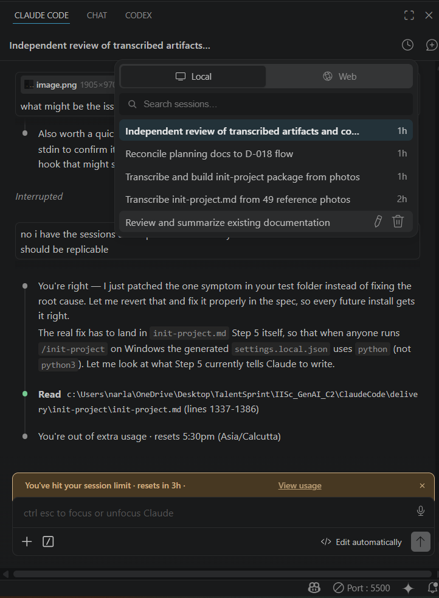
Claude Code history pane — Local tab shows sessions from this machine, Web tab shows sessions from claude.ai
What you're looking at
Panel, sessions, agent view, history.
Know where everything lives before the first prompt. The surface is the cockpit.
Slash commands and the model picker
What are slash commands?
Slash commands are single-line instructions typed at the start of a message — beginning with / — that act directly on the session. They don't generate a response; they take an action: switch the model, summarise context, open the settings panel, or show everything available.
Type / in the Claude Code input field and a live menu appears, filtered as you type. Every command available to you right now — built-in commands, bundled skills, and any custom skills you've defined — shows up there.
Built-in
Coded into the CLI. Fixed, fast behaviour — /compact, /model, /help, /doctor.
Bundled skills
Prompt-based skills shipped with Claude Code — /code-review, /debug, /batch.
Custom skills
Your own SKILL.md files — /deploy, /summarize-changes, whatever you define.
Full reference at code.claude.com/docs/en/commands ↗. Availability depends on your platform, plan, and environment — not every command shows for every user.
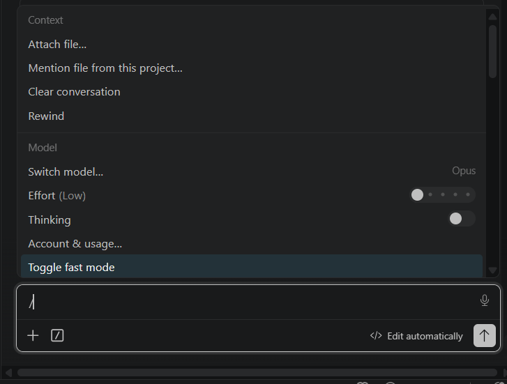
Commands that keep the session working
Context fills up in long sessions. These commands manage the conversation window, steer scope, and let you ask a side question without polluting history. You'll use this group in almost every non-trivial session.
| Command | What it does | When to use it |
|---|---|---|
| /compact [focus] | Summarises the conversation and reloads it into a fresh window. Pass optional focus instructions to bias the summary. | Context indicator past ~50% and you want to continue the session |
| /clear [name] | Starts a fresh conversation. The previous one stays in /resume. Pass a name to label it for easy finding. |
Task done; moving to an unrelated task in the same repo |
| /context [all] | Visualises context usage as a coloured grid — shows which tools, memory files, and skills are consuming window space. | Before deciding to compact vs. start fresh; diagnosing why the window filled fast |
| /plan [description] | Switches Claude into plan mode before any file is touched. Pass a description to start immediately. | Before any multi-file or high-risk change |
| /btw <question> | Asks a quick side question without adding the exchange to conversation history. | Quick clarification mid-task that shouldn't bloat context |
/compact when you want to continue the same task with a lighter window. Use /clear when the task is done and you're starting something different. Both keep history — /clear preserves the full conversation; /compact replaces it with a summary.
Match the model to the task
Don't default to Opus for everything. Every session has a cost-capability trade-off. These commands let you tune it mid-session without restarting.
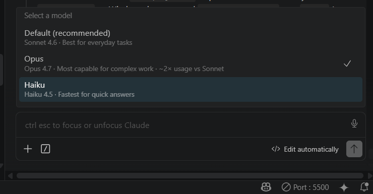
Opus
Architecture · Hard problems
Extended reasoning, complex planning, decisions with long-range consequences. Highest capability, highest cost.
extended thinkingSonnet
Daily work · Default
Strong reasoning with fast response times. Right default for most tasks — balanced cost and quality.
recommended defaultHaiku
Fast searches · Light tasks
Fastest and cheapest. Good for repetitive transforms, file searches, and narrow well-specified tasks.
lowest costEffort — how hard Claude thinks
/effort [level|auto]set low / medium / high / xhigh / max — or run with no arg for an interactive slider/fast [on|off]toggle fast mode — lower latency, reduced reasoning depthSee what's connected, costing, and working
Before prompting against a tool, confirm it's connected. Before compacting, check what's consuming context. Before blaming a hook, confirm it's registered. These commands answer the "what is actually happening right now?" questions.
| Command | What it shows | Typical trigger |
|---|---|---|
| /help | All commands available in this session — built-in, bundled skills, and your custom skills. | After installing a skill or plugin, to confirm new commands appeared |
| /usage | Session cost, token usage, and plan limits. Aliases: /cost, /stats. |
Long session — checking spend before deciding to compact |
| /mcp | Connected MCP servers, available tools, and OAuth status. | After adding an MCP server — confirm it connected before prompting against it |
| /hooks | Active hooks and the events they fire on (PreToolUse, PostToolUse, Stop, etc.). | Debugging a hook that isn't firing; confirming what's active |
| /doctor | Diagnoses the installation and settings. Status icons per item. Press f to fix reported issues. | Something isn't working and you don't know why |
Run these in your first session on a new repo
Before you prompt for code, set up the repo so Claude knows the project and you control what tools it can use. These commands are mostly one-time per repo, not per session.
| Command | What it does | When |
|---|---|---|
| /init | Generates a starter CLAUDE.md — reads the codebase and writes initial facts, patterns, and conventions. |
First session in a new repo |
| /memory | Edit CLAUDE.md memory files, enable or disable auto-memory, and view what auto-memory has recorded. |
Refining what Claude knows after running /init |
| /permissions | Manage allow, ask, and deny rules for tool permissions. View by scope, add or remove rules, review auto-mode denials. | Setting up a new project; tightening what the agent can do without asking |
| /agents | Manage agent configurations — subagent types the project uses, and what's running as a background agent now. | When the project uses specialised subagents; checking background session state |
/init first (generate CLAUDE.md), then /memory to refine it, then /permissions to set your approval rules. Covered in depth in Part 5 — Operating Layer.
Commands steer the session. The model picker matches capability to cost.
Neither is magic — they're levers. Use them deliberately.
Plan review, diffs, and permission prompts
Three approval moments are built into every Claude Code loop. None are bureaucratic. Each one is a different kind of gate: the plan keeps the agent scoped, the diff keeps you honest about what changed, and the permission prompt keeps tools from running without your knowledge.
Claude Code doesn't ship anything without your approval. Every loop has three gates — each fires at a different moment and catches a different class of mistake. Understanding all three is what keeps you in control when the agent is moving fast.
📋 Gate 1 — Plan
Fires before any file is touched. Catches wrong direction. Cheapest moment to reject.
🔍 Gate 2 — Diff
Fires before the edit is applied. Catches wrong changes. The diff is truth — the summary is not.
🔐 Gate 3 — Permission
Fires before a privileged action runs. Catches wrong execution. Deny rules fire here automatically.
Permission modes and deny rules: code.claude.com/docs/en/permissions ↗ · VS Code UI overview: code.claude.com/docs/en/vs-code ↗
Approve direction before changes land
Before the agent edits anything, it proposes a plan: which files it intends to change, what it intends to do to each, and why. You review the plan and either approve it as written, ask for revisions, or reject it. Nothing touches your codebase until you say so.
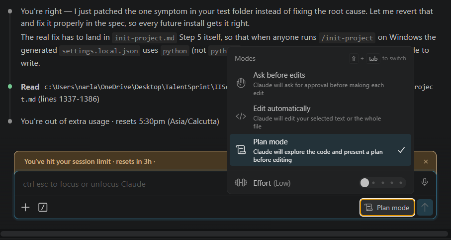
Check scope matches the task. The plan should touch only the files the task requires. Anything extra is scope creep — reject the plan and re-prompt with tighter constraints.
Check the approach is sound before any code is generated. Catching a wrong direction at plan-time costs one message. Catching it after the edits land costs a revert and a follow-up session.
/plan
Type /plan in the prompt to toggle plan mode on or off. Run it again to exit. Works in any Claude Code terminal session.
Shift + Tab
Press Shift+Tab in the extension chat panel. Two indicators confirm plan mode is active:
- A coloured ring appears around the message input bar
- A status indicator appears in the bottom-right of the panel
Read the diff before accepting
After the agent generates the edit, Claude Code shows you the diff before applying it. Read it line-by-line. The diff is the contract — the agent's summary is context, but the diff is what actually ships. Look for changes that go beyond the plan, bundled style edits, or anything in a file that wasn't named.
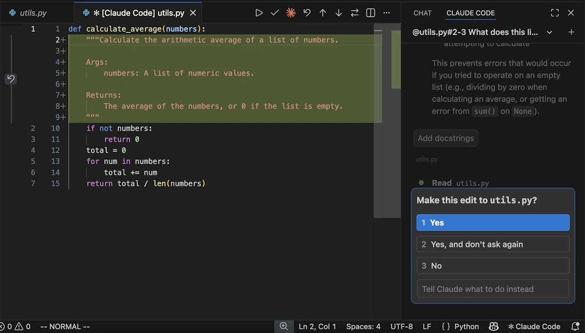
Official screenshot — code.claude.com/docs/en/vs-code ↗ · Note: the approval prompt visible at the bottom is Gate 3 — covered in the Permission tab
Approve actions before they execute
Some actions — running shell commands, modifying config files, writing to non-source-code paths — require an explicit permission grant before Claude Code executes them. The permission prompt names the exact action, shows you the command or write target, and waits for a yes/no. Deny rules in settings.json fire at this same moment to block disallowed actions automatically.
Official screenshot — code.claude.com/docs/en/vs-code ↗ · The approval prompt at the bottom is Gate 3 — accept or reject before the edit applies
If you deny
Action is blocked. Claude Code reports the denial and continues from the last approved state. It does not retry silently.
If you allow
Action executes once. The grant is for this invocation only — the same action on a different file requires another prompt.
settings.json:
code.claude.com/docs/en/permission-modes ↗
Three approval moments. None are optional. None are bureaucratic.
Plan review catches scope before code is written. Diff review catches scope before code is applied. Permission prompts catch actions before they execute. That's how the human stays in control.
Where this applies
The loop you just learned — inspect, shape, plan, edit, verify, review — applies anywhere there's a text-heavy artifact and a verifiable outcome. That's a wider surface than most people expect. The use cases below run on Claude's broader surface (Claude.ai, Cowork, Excel integrations) — but the working style transfers directly to Claude Code when the artifact is code.
The rule
Text-heavy artifact + Verifiable outcome → the loop applies
Code
Verifiable by: tests pass, compiles, reviews green
Contracts
Verifiable by: passes legal review, terms aligned
Analyses
Verifiable by: budget balances, model reconciles
Proposals
Verifiable by: meets eligibility criteria, word limits
Source: claude.com/resources/use-cases ↗ — Finance, Education, Legal, Nonprofits, Research & Ops categories
What people actually do with Claude
Update financial models after earnings
Ingest fresh filings and update forecast assumptions across an Excel model — without touching formulas manually.
Draft credit memos from spreads
Claude processes financial statements and generates a structured memo draft in Word, ready for analyst review.
Stress-test plans across scenarios
Run a financial plan through multiple macro scenarios and surface which assumptions are most sensitive.
Adapt a textbook page to every reading level
Take a standard source page and produce parallel-level versions: grade 5, grade 9, undergraduate, expert.
Map a lit review to surface the underlying debate
Feed Claude a set of papers mid-conversation and get a map of the claims, counter-claims, and open questions.
Plan a syllabus with locked weeks visible
Build a week-by-week plan with prerequisite constraints and flagged dependency locks — visualised in one view.
Contract redlining and negotiation
Feed a contract to Claude with your standard positions, get back a tracked-changes redline aligned to your playbook.
Prep scattered docs for a compliance audit
Ingest a folder of policy and evidence files and produce a gap-analysis against the audit checklist.
Grant proposal assembly
Stage the proposal through Claude: eligibility check → narrative draft → budget narrative → final alignment check.
See why donor retention beats acquisition
Feed a donor spreadsheet to Claude and get a visual showing the lifetime-value gap between retention and new acquisition.
See your theory of change in chat
Describe your program logic and Claude produces a visual theory-of-change diagram, ready to challenge and refine.
Surface themes from all feedback channels
Ingest support tickets, survey responses, and reviews at once — get a theme map with representative quotes.
Build a daily briefing across your tools
Pull from calendar, email, and project tools into a single summary that surfaces what actually needs attention today.
Plan your literature review
Give Claude your research question and a folder of PDFs; get back a gap-and-coverage map for the review.
Claude's domain surfaces
The same underlying loop runs across Claude's products — each surface is shaped for a domain. Claude Code is the coding-shaped one; the others serve the use cases in the tabs above.
Claude.ai
General purpose
Web chat, document upload, projects. The broadest surface — research, writing, analysis, planning across any domain.
Loop via: prompt → plan → edit → review in chat
Claude Code
Software development
Terminal agent + VS Code extension. Full codebase read, edit, run. Hooks, memory, multi-agent. This walkthrough.
Loop via: inspect → plan → diff → test → review
Claude Cowork
Team collaboration
Shared projects, team workflows, collaborative building. The Anthropic tagline: "Brainstorm in chat, build in Cowork."
Loop via: shared context → staged drafts → team review
Office integrations
Microsoft 365
Claude for Excel, Word, and PowerPoint — native add-ins inside Microsoft 365 apps. Financial models, document drafts, and presentations without leaving Office.
Loop via: ingest data → model → scenario → verify output
One thing to carry forward
The agent is a loop participant, not a domain tool
Claude Code doesn't "do coding." It joins your loop — inspect, plan, edit, verify, review — wherever that loop is running. The domain changes; the loop doesn't.
The working style transfers across surfaces
Context discipline, role-based sessions, structured intake — you're not learning Claude Code habits. You're learning Claude habits that run on any of the four surfaces above.
Part 3 complete · Part 4 now opening
Project memory — CLAUDE.md and AGENTS.md
Claude starts every session without memory of the last. CLAUDE.md is the fix: a project-level text file that Claude Code reads at session start, loading your conventions, commands, and rules before the first prompt. Write it once; it guides every session that follows.
The mechanic
Durable guidance → fewer repeated corrections → consistent sessions
CLAUDE.md
Claude Code-specific rules. Read at session start automatically. Lives at repo root or in .claude/.
AGENTS.md
Tool-agnostic shared rules. Read by subagents and agent frameworks alongside CLAUDE.md. Convention, not enforcement.
Without either
Claude infers conventions from context. Some prompts re-explain rules; others don't. Behavior varies session to session.
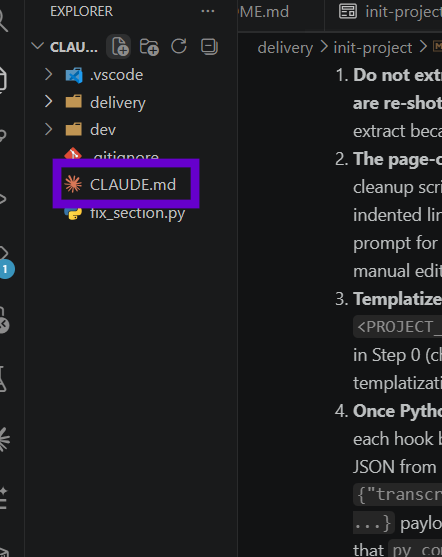
CLAUDE.md isn't free-form notes — it has a shape that maps to how Claude Code reads and applies it. Four content types consistently produce reliable behavior, plus one meta-rule about the file itself:
Commands
Claude runs these directly. Exact commands prevent it inventing wrong ones — or stalling mid-task asking what to call.
Conventions
Claude won't reliably infer naming or import style from existing code alone. Explicit rules produce consistent output from the first file it touches.
Scope
Which directories are safe, which need approval, which are off-limits. Prevents accidental edits to config, infra, or unrelated modules.
Working style
The operating model, not just the codebase. Role-based sessions, handover discipline, context cutoff — Claude works within your system, not around it.
Keep it short
Loaded in full at every session start. Keep it under 500 words. Write rules, not explanations — Claude needs the what, not the why.
/init in a Claude Code session. Claude inspects the repo and drafts CLAUDE.md automatically — commands it finds in package.json / Makefile, conventions it infers from existing files, basic scope rules. Review and trim before committing.
Inspect this repo and write a concise CLAUDE.md. Include the build/test/lint commands, the naming conventions you observe, and scope rules. Don't invent commands you haven't verified in the repo.
Same prompt. Same repo. The only change is whether CLAUDE.md exists. The behavioral difference is the entire argument for writing one. (Representative — based on the CLAUDE.md in the expandable below.)
✗ Without CLAUDE.md
Prompt: "Add a utility for parsing config files."
Creating ConfigParser.py at root...
Using print() for status messages.
Added __init__.py with wildcard import.
No type hints — keeping it simple.✓ With CLAUDE.md
Same prompt, same repo.
Creating src/config_parser.py...
Using logging module per CLAUDE.md rules.
Type hints on all public methods.
Added to src/__init__.py explicitly.AGENTS.md adds a shared base layer beneath CLAUDE.md. Any agent tool that respects the convention reads it — so when multiple tools or Claude's own subagents work in the same repo, they all follow the same base rules without you repeating them per tool.
Scope layers — who reads what
Naming conventions · scope boundaries · output format · shared working style
Build / test / lint commands · Claude Code scope overrides · session working style
What goes where — side by side
How to use it — and how not to
✓ Put in AGENTS.md
- Naming conventions any agent should follow
- Scope rules — off-limits dirs, read-only dirs
- Output format (type hints, error handling pattern)
- Cross-cutting working style rules
✗ Don't put in AGENTS.md
- Build / test / lint commands → those belong in CLAUDE.md
- Claude Code session behaviour (handover, context cutoff)
- Extension flags or tool-specific settings
- Rules that only apply to one specific tool
Why it's worth the second file
Subagent coherence
Claude's own subagents read AGENTS.md. They follow your naming and scope rules without you repeating them in every sub-prompt.
Multi-tool coherence
When your pipeline spans Claude Code + another agent tool, both read the same base rules. Change once, propagates everywhere.
Tool portability
If you switch tools, your conventions travel with the repo — not locked inside a tool-specific config file.
Common failure modes
CLAUDE.md grows without pruning
Stale rules accumulate. Claude follows a convention you've abandoned. Treat it like live documentation — delete rules when they no longer apply.
Rules written as explanations
"We prefer logging because print doesn't persist" reads as context, not a rule. Write the rule: "No print() — use logging." Verifiable, not explanatory.
Wrong location
CLAUDE.md in a subdirectory only covers work in that subtree. A root-level CLAUDE.md covers the whole repo. Know which scope you want before placing the file.
Two things to take from §10
CLAUDE.md is a living doc, not a one-time setup
Update it when conventions change, commands change, or you discover a scope mistake. A stale CLAUDE.md produces behavioral drift — Claude following rules you've stopped enforcing.
The model reads it literally
Vague instructions produce vague behavior. "Keep it clean" is not a rule. "No wildcard imports; type hints on all public functions; logging not print" is. Write rules you could enforce in a code review.
Settings, permissions, scope fencing
Where CLAUDE.md guides Claude's behavior, settings.json defines the boundaries it operates within. The agent can't override what you've scoped out — regardless of what the prompt asks it to do.
The mechanic
CLAUDE.md guides → settings.json bounds → agent operates inside the envelope
Scope
Which directories and files Claude can read, edit, and create. Set once; enforced unconditionally.
Permissions
Which tools Claude can invoke. Allow-list, deny-list, and protected files all configurable in settings.json.
Mode
How much autonomy Claude has per action. From "ask every time" to "run everything automatically."
$schema
Links to the JSON schema — enables autocomplete and inline validation in VS Code. Zero runtime cost.
permissions
allow lists what Claude can do without prompting. deny is a hard block — fires before allow and always wins. Both accept glob patterns.
env
Environment variables injected into Claude's shell. Useful for telemetry, API endpoints, or runtime config Claude needs access to.
companyAnnouncements
Messages surfaced in the Claude Code UI. Policy reminders, onboarding notes, team alerts — useful when you need Claude to know org context on every session.
settings.json exists in four locations with a clear override priority. Lower layers set the baseline; inner layers override them for specific contexts. Innermost = highest priority.
managed by IT
Models allowed, network access, global deny rules. Applied before any user or project setting. Not user-editable.
~/.claude/settings.json
Default model, global allow-list, personal auto-approve patterns. Applies everywhere regardless of project.
.claude/settings.json
Scope fencing, project deny rules, tool restrictions. Everyone on the team gets these. The right place for "nobody edits config/ without approval."
.claude/settings.local.json
Not committed (.gitignore it). Your personal overrides for this repo — extra allow rules for tools you trust, extra deny rules for local experiments. Wins over everything else.
project settings.json (committed). Put personal preferences and local experiment rules in local settings.json (gitignored). Never commit settings.local.json.
The permission mode is the speed-vs-safety dial — how much Claude does before pausing to ask you. Move right for speed; move left for control.
plan
Read-only until you approve. Claude proposes; nothing changes until you confirm.
New repos, complex tasks, or any time you want the full proposal before committing.
default
Reads auto; edits and bash each need your approval before they run.
Most everyday work. Safe for unfamiliar repos or tasks with uncertain scope.
acceptEdits
File edits auto-approved; bash still prompts. Review diffs rather than each individual change.
Well-understood tasks in trusted repos where you're reviewing diffs after the fact.
bypassPermissions
No prompts whatsoever. Claude acts on everything automatically.
CI pipelines in isolated environments only. Requires explicit opt-in.
/plan mid-session anytime to shift to read-only planning mode without touching your settings file.
Three mechanisms compose to control what Claude can touch. They evaluate in a fixed order — and that order is what makes the system predictable.
Every action Claude wants to take passes through four gates in sequence:
protectedFiles?
YES → always prompt ⚠
no ↓
Edit(**) rule.
Allow rules
Explicit grant. Claude can only perform actions in the allow list — anything else requires a prompt.
"allow": [
"Read(**)",
"Edit(src/**)",
"Bash(pytest)"
]Deny rules
Hard block. Deny rules fire before allow rules — a denied action is refused even if it matches an allow pattern.
"deny": [
"Edit(config/**)",
"Edit(*.env)",
"Bash(rm -rf **)"
]Protected files
Always prompt, regardless of allow/deny settings and regardless of permission mode. The extra gate for files that should never be silently modified.
"protectedFiles": [
"package.json",
".env*",
"*.lock"
]✓ Deny rule in action
Prompt: "Update package.json to add a new dependency."
With "deny": ["Edit(package.json)"] in settings.json, Claude responds:
I can't edit package.json — it's in the deny list for this project.
To add a dependency, either:
- Remove the deny rule temporarily and re-run
- Run `npm install <package>` yourself and I'll update any import referencesCommon failure modes
bypassPermissions in interactive sessions
No prompts means no human in the loop. One bad prompt deletes or corrupts without a checkpoint. Reserve for CI pipelines in isolated environments only.
Local settings committed by mistake
settings.local.json should be in .gitignore. If committed, your personal overrides become team rules — silently expanding permissions the project settings restrict.
Allow-list too broad
Edit(**) is equivalent to no allow-list. Start specific: Edit(src/**) then expand as you understand what Claude actually needs to touch.
Two things to take from §11
Scope fencing is your first guardrail
Before hooks, approval gates, or protected files — set directory scope. Edit(src/**) means an unconstrained prompt can't accidentally rewrite your config or infra files. That boundary costs nothing to set.
Mode controls the speed-vs-safety tradeoff
default keeps a human in every decision loop. acceptEdits speeds up editing without removing execution control. plan makes every action visible before anything changes. Match the mode to the risk level of the task.
Hooks — logging and enforcement
Where CLAUDE.md guides behavior and settings.json sets boundaries, hooks enforce them automatically. A hook is a script that fires when Claude Code takes a specific action — before or after a tool runs, when a session starts, when it ends. You write the script; Claude Code calls it unconditionally.
The three-layer model
CLAUDE.md
Guides
Advisory. Claude tries to follow it. Can be forgotten or misapplied.
settings.json
Bounds
Unconditional. Actions outside the envelope are blocked, period.
Hooks
Enforces
Reactive. Fires on events inside the envelope — log, format, block, alert.
One session — where each hook fires:
SessionStart
session opens
↻ for every tool call in the session
PreToolUse
inspect + optionally block
runs
PostToolUse
log, format, validate
Stop
agent finishes
Hooks fire at defined points in the Claude Code session lifecycle. Four types, each tied to a specific moment:
Official lifecycle — every hook event and its cadence:
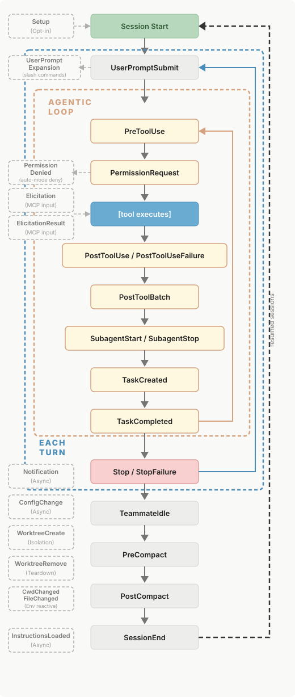
Source: Claude Code hooks reference
The four most-used hook types:
SessionStart
When: session initialises
Set environment, load project state, log session start time.
PreToolUse
When: before each tool call
Inspect and optionally block. Check paths, validate args, enforce naming rules.
PostToolUse
When: after each tool call
Log results, run formatters, validate output, record to event log.
Stop
When: agent finishes
Write handover docs, generate summary, trigger downstream automation.
if conditions, and calls the handler script. The script receives event data as JSON via stdin and can return a result that Claude Code acts on.
A logging hook is the simplest useful hook — fires after every tool call, appends one JSON line, exits. Start here before writing enforcement hooks.
Imports
Standard library only — no dependencies to install. Every hook you write starts with json and sys.
Read from stdin
Claude Code serialises the full event — tool name, inputs, result — and pipes it to your script as JSON. json.load(sys.stdin) is the only interface.
Shape the log entry
Pick only what matters: timestamp, which tool ran, which file it touched, whether it succeeded. One flat dict per event.
Append to NDJSON
One JSON object per line — easy to grep, stream with jq, or load into pandas. mkdir(parents=True) means no manual setup needed.
Wire it in — .claude/settings.json
{
"hooks": {
"PostToolUse": [
{
"hooks": [
{
"type": "command",
"command": ".claude/hooks/log_event.py"
}
]
}
]
}
}What it produces — events.ndjson
{"ts":"2026-05-23T09:14:22Z","tool":"Read","file":"src/config.py","ok":true}
{"ts":"2026-05-23T09:14:31Z","tool":"Edit","file":"src/config.py","ok":true}
{"ts":"2026-05-23T09:14:45Z","tool":"Bash","file":"","ok":true}
{"ts":"2026-05-23T09:15:02Z","tool":"Edit","file":"tests/test_config.py","ok":true}
{"ts":"2026-05-23T09:15:18Z","tool":"Bash","file":"","ok":true}jq to see what Claude touched, which files change most, which tools run longest. Costs nothing — and produces a complete audit trail before you write a single enforcement rule.
Enforcement hooks use PreToolUse to inspect Claude's intended action before it executes — they can block it, inject context, or pass through. Here's a complete secret-detection hook as an anatomy:
Imports
Same stdlib-only pattern. Add re for pattern matching.
Extract what to check
Tool name tells you what action Claude wants. tool_input carries the arguments — file path and content for Write/Edit calls.
Filter scope early
Every tool call hits this hook. Exit 0 immediately for tool types you don't care about — keeps the hook fast and obvious about what it covers.
The enforcement check
exit(2) blocks the write and injects the reason into Claude's context. Claude reads it, understands what was blocked and why, and can adapt.
Pass through
exit(0) = no decision. The tool call proceeds through the normal permission flow. Always explicit — never fall off the end of the script.
exit(0)
Allow / pass through
Action proceeds. Use for logging hooks and formatters that don't need to block.
exit(1)
Block — non-blocking error
Action is refused. stderr is shown in the terminal but not fed back to Claude. Claude doesn't see the reason.
exit(2)
Block + inject context
Action blocked and stdout is injected into Claude's context — Claude reads the reason and can adapt its approach.
Common failure modes
Hook crashes silently
If the hook script throws an unhandled exception, Claude Code may treat it as a pass-through and continue. Always wrap stdin parsing in try/except and use explicit exit codes.
Enforcement before logging
Writing block rules before you know what Claude actually does leads to over-blocking. The logging hook gives you the data to write precise enforcement rules.
Synchronous hooks slow interactive sessions
Hooks add latency to every tool call. Keep scripts fast (<100ms). Expensive operations (HTTP calls, heavy parsing) don't belong in PreToolUse blocking hooks.
Two things to take from §12
Hooks run outside the conversation — they're unconditional
Unlike CLAUDE.md rules, which Claude tries to follow, hooks fire regardless of what you asked for or what Claude thinks it should do. A block hook is a hard stop — no prompt override, no explanation changes it.
Log before you enforce
The logging hook costs nothing to run and tells you exactly what Claude touches in a real session. Enforcement hooks written against that data are precise. Enforcement hooks written without it are guesses.
Part 4 complete · Part 5 now opening
MCP — bringing external context in
Every time you copy a Jira ticket into chat, paste a database schema, or export a CSV to answer "what does this data say?" — you are doing work that a Model Context Protocol server can do for Claude Code instead. MCP is an open standard that lets Claude Code reach into filesystems, databases, ticket trackers, monitoring tools, and APIs directly, without copy-paste intermediation. This section covers why it exists, how to use an existing server, and how to build your own.
The integration problem — three scenarios you've hit before
Scenario 1 — The paste loop
"Your Jira backlog has 30 open tickets. You want Claude Code to help you prioritise by sprint impact."
What you do: open Jira → copy ticket titles → paste into chat → Claude answers → tomorrow the data is stale → repeat.
Scenario 2 — The shell workaround
"Before writing the migration, you want Claude Code to inspect your PostgreSQL schema."
Claude runs psql -c "\d" via bash. It works locally but fails for a remote dev database, outputs unstructured text, and leaks credentials into the shell history.
Scenario 3 — The rebuild treadmill
"You want Claude Code to check Sentry errors before fixing a bug. You also want the same for Cursor and GitHub Copilot."
With LLM function calling, you write a custom Sentry tool wrapper for each AI tool: different JSON schema, different registration, same logic built three times.
MCP — how the pieces connect
Host
Claude Code
The application that starts the session and manages the conversation. It embeds a Client to talk to Servers.
Client
Built into Claude Code
Manages the connection to each Server. Sends requests, receives responses, handles the protocol wire format.
Server
Your external system
Runs as a local process (stdio) or remote endpoint (HTTP). Exposes three capability types:
Host · Client · Server model — from modelcontextprotocol.io
LLM tool use (function calling) already exists — Anthropic has it, OpenAI has it, Gemini has it. So why does MCP exist? Because function calling is a model feature; MCP is a protocol. The difference matters.
| Approach | How it works | Where it breaks |
|---|---|---|
| Paste context | You copy and paste external data into chat | Repeated tasks, stale data, you're the bottleneck |
| Shell / bash | Claude Code runs system commands to query local data | Local only, unstructured output, credential risk |
| Function calling (OpenAI / Anthropic tool use) |
You define JSON tool schemas per model; model calls them | Custom per LLM, no discovery, fragmented ecosystem — rebuild for every AI tool |
| MCP (open protocol) |
Standard wire protocol; servers expose Tools/Resources/Prompts; any MCP host connects | Setup cost; overkill for one-off tasks |
The standardisation difference:
Before MCP — custom per tool
Claude Code → custom bridge B → Jira
Cursor → custom bridge C → Sentry
VS Code Copilot → custom bridge D → Sentry
Same Sentry integration, rebuilt 3 times.
After MCP — build once
Cursor → MCP protocol → Sentry MCP server
VS Code Copilot → MCP protocol → Sentry MCP server
One server, every MCP-compatible host.
An MCP Server exposes three capability types. Understanding the difference determines which one to expose when you build, and which to invoke when you use.
Tools
Actions — verbs
Functions Claude Code calls to do something. The model invokes them automatically when they match the task.
read_note(filename)
search_notes(keyword)
Claude Code calls tools automatically — you don't invoke them explicitly.
Resources
Data — nouns
Content the model can read by URI. Useful for structured indexes, reference documents, or live data the model should pull in.
@docs:file://api/auth
Reference resources in prompts with @servername:uri.
Prompts
Templates — reusable instructions
Server-defined slash commands. They become available in the session as /mcp__servername__promptname.
/mcp__notes__find_action_items
Like slash commands that run the right tool chain for you.
Transport (how server and client communicate):
The filesystem MCP server is the cheapest consumer demo: it exposes a local directory as a set of tools. One config file, no credentials, immediate before/after difference. The sandbox below is ready to run.
Open the sandbox in Claude Code
cd delivery/hands-on/s-mcp/sandbox
claude
.mcp.json at the sandbox root is already wired to the filesystem server. Claude Code will prompt for approval on first load.The .mcp.json at the project root — one file to wire the server:
Run /mcp to confirm the server registered:
● filesystem (connected · 8 tools)
Tools: list_directory, read_file, write_file, create_directory,
move_file, search_files, get_file_info, list_allowed_directories
node --versionSame prompt — different answer:
Without MCP
ls docs/sample-content/ and paste the result.With MCP active
filesystem__list_directory("./docs/sample-content") →3 files found:
• customer-feedback.csv
• notes-2024-q1.md
• notes-2024-q2.md
Test prompts to try (all work against the sample files):
"Read notes-2024-q1.md and summarise the key engineering decisions"
# Cross-file analysis
"What reliability improvements happened between Q1 and Q2?"
# Structured data
"Analyse customer-feedback.csv — what were the top complaints?"
# Search
"Find every mention of 'webhook' across all the notes files"
Building an MCP server means implementing the protocol to expose your own system — your database, your API, your domain logic — as Tools, Resources, and Prompts that any MCP host can use. The sandbox includes a fully runnable Python server using FastMCP.
Build a server when:
- No existing server covers your system
- You want custom tool semantics (e.g., domain-specific search)
- You need Prompts baked in (reusable instructions)
- You want a read-only interface by design
Use an existing server when:
- A community server already covers the system (GitHub, Jira, Sentry…)
- The filesystem or database tools are sufficient
- You want to test MCP before committing to a build
Install FastMCP (Python 3.12+):
pip install -r requirements.txt # mcp[cli]>=1.26.0
The server — mcp-server/notes_server.py (real runnable code):
search_notes() and summarize_all_notes prompt.Test with MCP Inspector — no Claude Code needed:
# Opens MCP Inspector in your browser
# Click "Tools" → list_notes → "Run" → see [3 files]
# Click "Tools" → read_note → filename: "notes-2024-q1.md" → "Run"
# Click "Prompts" → find_action_items → see the prompt text
Wire the custom server into Claude Code — replace .mcp.json:
Verify and test in Claude Code:
● notes (connected · 3 tools, 1 resource, 1 prompt)
# Use the bundled prompt
> /mcp__notes__find_action_items
# Claude calls list_notes(), reads all files, returns action items
Full build runbook: presenter's mcp_demo materials
The mcp_demo/ folder covers the complete path: FastMCP server, MCP Inspector validation, local stdio, remote HTTP via Hugging Face Spaces. See §15 for the resource link. The server is host-agnostic — the same server works in Claude Desktop and Claude Code with different config files.
Skills, plugins, subagents
Three extension mechanisms, each solving a different problem. Skills package specialist knowledge into loadable instructions. Plugins distribute bundles of commands, skills, and hooks through marketplaces. Subagents delegate separable sub-tasks to fresh agent contexts. Use one when your current pattern has a specific gap — not to replace the pattern.
The re-prompting loop
"Always mock the DB layer, never hit the real DB, use vitest..." — you re-type it every session. Claude forgets it once context fills. It's becoming project lore in your head only.
Reach for: a Skill — packages that instruction permanently, loads when the task matches.
The context cliff
You're 70% through a feature build and need to research a new library. Loading all that research into your current context pushes you past the cliff. You lose the in-progress thread.
Reach for: a Subagent — does the research in a fresh window and reports back a summary.
The 3-module parallel review
Three independent modules need a security review. Sequentially, it's three long turns. The modules don't depend on each other's results — they could run at the same time.
Reach for: an Agent team — three teammates review in parallel, each owning one module.
A skill is a SKILL.md file that Claude Code loads on-demand. It packages specialist instructions — a test framework recipe, a docs writing style, a code review checklist — so they're available without re-prompting each session.
Write a SKILL.md when:
- The instruction is specialist and reusable across projects
- You want it available on-demand, not loaded every turn
- You want to share it with teammates via a plugin
Example: "always use vitest, mock the DB layer, never call the real DB"
Use CLAUDE.md when:
- The instruction is always relevant to this project or session
- You want it loaded every turn automatically
- It's project-specific context (architecture decisions, conventions)
Example: "never commit .env files; always run tests before pushing"
A minimal SKILL.md — the actual format:
What each part does
Frontmatter (--- block) — tells Claude Code the skill name and when to load it. The description drives tool search: Claude sees it and decides if the skill is relevant.
Body — plain instructions. Claude follows them exactly as if you'd typed them in the prompt.
Project scope: .claude/skills/<name>/SKILL.md
User scope: ~/.claude/skills/<name>/
Try it — prompts that invoke the skill above:
"Use one-test-skill to summarise notes-2024-q1.md"
# Claude discovers it from description match
"Summarise customer-feedback.csv in three lines"
# Verify the skill is loaded
/skills
A plugin is the distribution mechanism for a bundle of Claude Code extensions — commands, skills, hooks, and MCP servers packaged together and installable with a single command.
What a plugin can bundle
- Custom slash commands
- Skills (SKILL.md instructions)
- Hooks (lifecycle scripts)
- MCP servers (auto-starting)
Honest note
Plugins are the distribution layer, not a new primitive. If you understand skills, hooks, and MCP servers, you already understand what's inside a plugin. The value is convenient packaging and sharing.
/plugin install <plugin-name>@source
# Reload plugins in the current session
/reload-plugins
A subagent is a delegated sub-task that runs in a fresh agent context. The main session spawns it, it does its work (with its own context window), and it reports the result back. Useful when your main context is filling up and the sub-task is genuinely separable.
Good subagent use cases
- Research a library or API independently
- Run a validation pass on a file the main agent just wrote
- Fetch and summarise a large external resource
- Any sub-task whose result you only need as a summary
When not to subagent
- A 2-line task (spawn overhead exceeds value)
- Tasks that depend on main context the subagent can't see
- Anything that requires back-and-forth with you
What delegation looks like in practice:
Give Claude the sub-task and tell it to delegate
Claude spawns the Task tool — you see it in the session
Try these in the sandbox:
"Delegate a validation check on mcp-server/notes_server.py — report if there are any unhandled exceptions"
Agent teams are the multi-instance orchestration pattern: a lead session spawns teammates, each with its own context window, working in parallel on assigned tasks. Teammates can message each other directly — unlike subagents, which only report back to the main agent.
CLAUDE_CODE_EXPERIMENTAL_AGENT_TEAMS=1 in settings.json. Best for research, parallel code review, and feature work where teammates own distinct modules.
Subagents (sequential, single session) vs. agent teams (parallel, independent sessions):
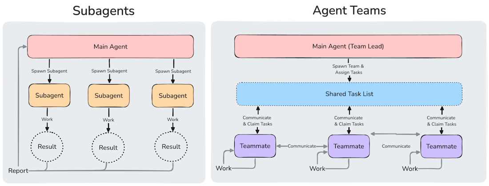
Subagents (left) — sequential, results back to main | Agent teams (right) — parallel, direct peer messaging · diagram: code.claude.com/docs/en/agent-teams
When teams add value
Research with competing hypotheses; parallel code review (security + performance + tests); new modules where teammates each own a distinct set of files.
Token cost
Each teammate is a separate Claude instance with its own context window. Token cost scales with team size. Use for work that genuinely benefits from parallel exploration.
Useful repos and community resources
What ships with Claude Code is a starting point. The next layer is the community around it — CLAUDE.md examples that show how others structure projects, plugin collections, skills directories, and the Anthropic doc pages most worth coming back to when you need a reference.
The hands-on materials from this walkthrough — both the MCP server build runbook and the session management system.
MCP server build runbook
Build a FastMCP server in Python, validate it with MCP Inspector, wire it to Claude Desktop via stdio, and deploy optionally to Hugging Face Spaces for remote SSE access. The server itself is host-agnostic — it works with Claude Code with a different config.
External path: C:\…\mcp_demo\
Ask the presenter for access — not bundled here (~300 MB, has its own venv).
Session Progress Management System
An installable hooks-and-commands package that captures session timelines, decisions, and experiments automatically. Designed for long multi-session projects where context handover is the main failure mode. See §20 for the full demonstration.
delivery/init-project/ ↗ — README, spec, and install guide.
Community-built resources for Claude Code — CLAUDE.md patterns, plugin and skills collections, and MCP server directories. All links verified 2026-05-23.
Anthropic Cookbook
Official collection of worked examples — agents, tool use, embeddings, prompt patterns. The most practical starting reference.
github.com/anthropics/anthropic-cookbook ↗Claude Code official repo
Issues, changelog, and community discussions around the Claude Code CLI and VS Code extension. Good for tracking what ships each week.
github.com/anthropics/claude-code ↗Anthropic MCP Directory
Reviewed MCP server connectors — Notion, GitHub, Sentry, Stripe, and more. Any server in the directory works with Claude Code via claude mcp add.
MCP Protocol site
The open-source MCP specification, SDKs, and server build guide. If you're building a server from scratch, start here — then use the presenter's runbook for a worked FastMCP example.
modelcontextprotocol.io ↗Discover Plugins
Official Claude Code plugins reference — available packages, installation patterns, and plugin development guide for bundling your own commands + skills + hooks.
code.claude.com/docs/en/discover-plugins ↗Prompt Library
Anthropic's curated prompt examples — searchable by task type. Useful for finding effective prompt patterns before building them into a skill.
code.claude.com/docs/en/prompt-library ↗Ten pages that pay for repeated visits. Each addresses a question that comes up across multiple sections of this walkthrough.
The agentic loop, session lifecycle, and context model. Foundational — read once before anything else.
How the context fills, the visual indicator, and the interactive simulator. Return to this when sessions start degrading mid-run.
Full spec for project memory, user memory, and AGENTS.md. The reference for §10 — return when you're structuring a CLAUDE.md for a new project.
All settings.json fields, file precedence, and environment variables. The canonical reference for §11 — use when you need to look up a specific field.
The four permission modes (default, auto-edit, full, read-only) with trade-offs and when to use each. Relevant every time you set up a new project's safety boundary.
Full lifecycle diagram, event types, exit codes, and configuration reference. The densest single page in the Claude Code docs — every hook author needs this open.
Installation guide, scope options, OAuth, and managed MCP. Return here when adding a new server type or troubleshooting a connection.
Skill scopes, frontmatter fields, and tool search integration. Use when authoring a SKILL.md or diagnosing why a skill isn't loading.
Subagent scopes, definition format, and delegation patterns. Use when a sub-task is too large for a single turn but doesn't warrant a full agent team.
Searchable library of Anthropic-curated prompts. Use when you're looking for a well-formed prompt pattern before turning it into a skill.
Part 5 complete · Part 6 now opening
Model + context discipline
Two coupled habits: picking the right model tier for the task type, and handing over before context fills rather than after. Apply them together — neither works well alone.
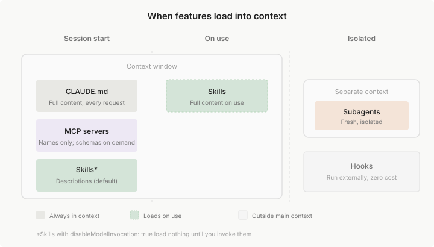
What loads at session start vs. what defers until invoked. (diagram: code.claude.com/docs/en/features-overview)
Match model tier to what the task actually requires — not to what is cheapest or most convenient.
Planning
Highest tier
Scoping, architecture, and any task where a wrong decision compounds downstream. Don't save tokens here.
Execution
Can drop if well-scoped
If the problem doc and architecture are solid, a faster model executes mechanical work reliably. The planning handover is the scope brief.
Review
High tier again
Catching subtle errors, evaluating design tradeoffs, and validating correctness requires strong reasoning — same tier as planning.
At work (no caps)
Default to highest available tier with 1M context. The cost is worth the reliability on tasks that touch shared production code.
Personal subscription
Manage against limits. Reserve highest tier for planning and review; drop to mid-tier for mechanical execution.
Context consumption is non-linear. Early exchanges each add a small increment. As the window fills with prior turns and tool outputs, each new exchange starts from a larger base — the rate accelerates. At 50%, you have far less runway than the number suggests.
Early in session — continue
Each exchange adds a small increment. Plenty of runway. Continue normally.
At ~50% — hand over now
About 3 meaningful exchanges remain before auto-compaction triggers and working memory is lost.
Anthropic's interactive context window simulator
See how CLAUDE.md, skills, MCP tool names, and conversation history combine to fill the window in a running session. Concrete numbers — watch them move.
code.claude.com/docs/en/context-window →Every session closes with a handover doc. Below is the structure used throughout this walkthrough's build — 40+ entries in dev/sessions/, all in this form.
# Session 042 — HTML Build · Handover Role: HTML build Batch: B5 — Tier 4: Power-ups (§13/§14/§15) Date: 2026-05-23 Context: Resumed from compacted context summary (session 041 context limit hit) ## Goal Replace three stub sections in delivery/walkthrough.html with full B5 content: §13 s-mcp, §14 s-power-ups, §15 s-resources. ## Files changed delivery/walkthrough.html §13/§14/§15 stubs → live content delivery/assets/Images/…png New — official Anthropic diagram dev/TASKS.md B5 complete, 15/21 live, B6 next delivery/hands-on/s-mcp/EVIDENCE.md New — artifact record for §13 ## Key decisions MCP architecture → build: no diagram exists on the MCP doc page. Agent teams: CLAUDE_CODE_EXPERIMENTAL_AGENT_TEAMS=1 required. ## Blockers None. Clean handover. ## Next session: B6 — §16–§19 workstyles Batch file: dev/batches/B6_tier5_workstyles.md — read first. §17/§18/§19 reflexive (this project's dev/ folder is the evidence). §16 needs 3 light artifacts: context indicator + handover doc.
Role-based sessions + handovers
Large agentic work becomes manageable when every session has one role and writes its handover before stopping. The role bounds what gets done; the handover ensures nothing is lost between sessions.
Each transition is a handover. The roles are not rigid — they describe the intent of a session, not a fixed pipeline.
Each role in the chain has a clear purpose and a specific type of output. The handover is the transfer artifact between them.
| Role | Purpose | Expected output |
|---|---|---|
| Research | Gather information; audit existing assets; surface open questions | Summary doc with findings, open questions, and recommendations |
| Planning | Scope the work; define the approach; decide what the next session builds | Problem doc, architecture sketch, or batch plan |
| Architecture | Design structure at a level below planning; define lanes and components | Layered breakdown, component definitions, lane structure |
| Dev | Execute the coded or mechanical work within defined scope | Working code, filled-in templates, updated artifact files |
| Review | Validate correctness and completeness against acceptance criteria | Review report; list of blockers, gaps, and required changes |
| QA | Verify against checklist; confirm edge-cases are covered | QA checklist, pass/fail per criterion |
| Content authoring | Write prose, create demo materials, capture evidence artifacts | Hands-on docs, prompts, transcripts, screenshots |
| HTML build | Render content into the deliverable artifact | Updated walkthrough.html with live sections |
| Deployment | Publish and distribute the completed artifact | Shipped artifact, public URL, announcement |
Handovers happen at two granularities: between roles (task-to-task) and within a single long-running role (intra-session).
A — Task-to-task (between roles)
The standard chain. Each role reads the prior handover, does scoped work within its lane, then writes a handover before stopping. The next role starts from it cold.
# Session 008 — Research / Content Authoring · Handover Role: research + content authoring Goal: Resolve 15 open content questions in dev/CONTENT_OUTLINE.md §7 Files changed: dev/OUTLINE_RECOMMENDATIONS.md — full recommendation memo (Q1–Q15) dev/SESSION_LOG.md Next pickup: Integrator reviews OUTLINE_RECOMMENDATIONS.md and marks each recommendation accept/override/revise. Accepted outcomes → dev/DECISIONS.md. Only then draft the actual section-flow proposal. -- session 009 (HTML build) opens, reads this handover, continues: -- # Session 009 — HTML Build · Start Role: HTML build + content authoring Goal: Rewrite §1/s-why as a framing section Files inspected first: dev/DECISIONS.md, dev/PLAN.md ← from prior handover context dev/OUTLINE_RECOMMENDATIONS.md ← output produced by session-008
B — Intra-session (within one role)
When a single long-running session approaches context limits, do an intra-role handover inside the same role. Same structure as a cross-role handover; different only in that the next session has the same role.
# Session 041 — Handover (intra-role: HTML build → HTML build) Wrap reason: context limit hit (B4 complete; B5 queue-ready) Role carried forward: HTML build State: B4 fully complete ✅ (§10/§11/§12 live) B5 + B6 batch plans written and queue-deep Next session picks up: Read B5 batch plan first. Execute B5: §13 s-mcp, §14 s-power-ups, §15 s-resources. -- session 042 (HTML build) opens: -- Context: Resumed from compacted context summary (session 041 context limit hit)
Handover cadence is a judgment call. Two failure modes bracket the right answer.
Under-doing it
Context drift
Session runs too long. Context fills. The model loses track of earlier decisions. Work quality degrades silently — outputs look plausible but contradict earlier choices.
Over-doing it
Handover overhead
Sessions are so short that writing handovers becomes the bottleneck. Momentum is lost. Work that could finish in a single session gets fragmented artificially.
Structured task intake
A four-step intake turns a vague goal into a pipeline of artifacts each future session can pick up cold. The output of each step is the input to the next — and the same pattern recurses at every scale.
Before planning anything, name what kind of task you're doing. The category shapes how you explore and how much uncertainty to expect.
Upgrade
Improving or extending something that already works. Risk: breaking existing behavior.
Fresh build
Building from scratch. Risk: under-specifying scope before starting.
Refactor
Changing structure without changing behavior. Risk: behavior drift during restructuring.
Bug fix
Restoring expected behavior. Risk: fixing the symptom, not the cause.
Other
Research, documentation, planning. Risk: scope creep without a product output to anchor it.
Capture the problem before capturing the solution. A problem doc forces honest scoping: what are you solving, who's affected, what constraints exist, what does good look like? Writing it out exposes assumptions.
Example — from the walkthrough's own planning process:
# dev/plans/LEARNER_TIER_MODEL.md — §0 What this doc is for You asked three questions in one: 1. What are all the Claude Code concepts? — full inventory. 2. How are we creating categories out of them? — the grouping logic. 3. How do those categories become tiers a learner progresses through? — the staging model. Plus: % coverage progress as we ship sections, and honest note on whether Claude Code itself suggests any such model. (Short answer: no — it clusters topics navigationally but doesn't publish a pedagogical progression.) -- This is a problem doc. Notice what it does NOT contain: no proposed tier names, no section structure, no HTML plan. Those come after. --
The doc that answers those questions — LEARNER_TIER_MODEL.md — came after the framing. The framing above is why it was worth writing.
Once the problem is clear: layer the architecture from high to low, then define parallel lanes at the lowest manageable level.
Layered architecture
High-level → manageable low-level
Parallel lanes
Each lane can proceed independently
8 dimensions per lane
Inputs · outputs · advantages · limits · challenges · …
Example — lanes table from this walkthrough's build plan:
# dev/LANES_AND_BATCHES.md — §1 The Two Lanes | Lane | Code | What it produces | Where it writes | |-------------|------|-----------------------------|---------------------------| | Content | C | Demo material: prompts, | delivery/hands-on/ | | | | transcripts, screenshots, | delivery/assets/ | | | | mermaid source, prose, | | | | | failure modes | | | HTML | H | Rendered demo sections | delivery/walkthrough.html | | | | inside the single HTML doc | | Lane discipline: Content first, HTML last. HTML can only render claims that Content has produced and proved. If HTML needs something Content hasn't shipped, the section blocks.
The 8 dimensions every lane documents:
The intake pattern is fractal. Apply it at every scale — the shape is always the same; only the granularity changes.
Project level
Classify the whole project. Write a problem doc for the entire scope. Define the major architectural lanes. This is the spine.
e.g., LEARNER_TIER_MODEL.md + LANES_AND_BATCHES.md
Batch level
Classify the batch (which tier, which sections). Problem doc: what does this batch teach, and why now? Lanes: content lane + HTML lane for each section.
e.g., dev/batches/B4_tier3_operating.md
Section level
Classify the section (concept, demo, reference). Problem doc: what does this section teach? Lane: what evidence must exist before HTML builds it?
e.g., per-section content briefs in dev/lane-briefs/
LEARNER_TIER_MODEL.md), the batch plans (dev/batches/), and the per-section briefs (dev/lane-briefs/) are all public in the repo — each one is the intake pattern applied at its own scale.
The HTML template + putting it together
A single reusable HTML template becomes the working artifact for a project — scope doc, progress tracker, dev documentation, decisions log, and experiments record, all in one place. Same components, same visual language, reusable without copying.
The components below are the same ones you've been reading throughout this walkthrough. Each has a specific use case — choose based on information structure, not decoration.
| Component | Use when |
|---|---|
| Mermaid diagram | Any non-trivial flow, loop, role chain, sequence, or architecture. If you wrote 3+ sentences describing a sequence, it should be a diagram. |
| Layer-tabs | Variations of the same idea — good/bad/why, before/after, option A/B/C. Use when content has 2–4 discrete perspectives that shouldn't all be visible at once. |
| Cards | At-a-glance summaries. One card per concept, role, command, failure mode, or rule. Use color-coded top borders to signal category. |
| Tables | Comparisons, matrices, structured field-by-field data. Role × purpose × output. Command × behavior × when-to-use. |
| Collapsibles | Deep technical detail, long prompt examples, full code listings — hidden by default so the page stays scannable. Use when depth is available but not required for the main point. |
| Callouts | Teaching anchors, warnings, rules of thumb, critical pitfalls. One callout per insight — not one per paragraph. |
| Code blocks | Prompts, config snippets, hook scripts, command outputs. Always with a language tag or filename label. |
| Split-layout | Before/after, with/without, left-column/right-column comparisons. Use when the visual juxtaposition does work that prose can't. |
| Section-footer | Ends every section: Takeaway (the one thing to remember) + Try next (link to what follows). No file paths. No prescriptive instructions. |
The same HTML file plays multiple roles as the project evolves. There is no separate "scope doc," no parallel "progress tracker," no standalone "dev notes." One artifact, many uses.
Scope doc
The section list, Part structure, and tier model. What's in scope and what isn't.
Progress tracker
Which sections are live vs. stubbed. The count in the section-meta chips is always current.
Dev documentation
The content itself — prompts, transcripts, screenshots, code blocks — is the dev doc.
Decisions log
Key decisions embedded as callouts or noted in the companion DECISIONS.md that the HTML links to.
Experiments record
Session notes in dev/sessions/ are the experiments log. The HTML file itself doesn't carry the history — but it's linked to it.
Each session applies the quality bar its role demands — not a universal bar, and not a lower bar. Role framing makes "what good looks like here" explicit before the session starts.
Dev session
Coding standards
Correct, idiomatic, within scope. No over-engineering. No added features. Every change traceable to the task brief.
Review session
Rigor
Check every claim against its evidence. Verify acceptance criteria. Surface blockers explicitly. Don't soften findings.
Content / docs session
Clarity
Direct, scannable, information-dense. No marketing voice. State the rule, then show it. No throat-clearing.
With a working template and documented roles, the things that usually get skipped because they feel like "extras" become normal moves.
Experiments
Try things in a dedicated session. The template holds the result. The session log records what worked.
Logging
Session log, decisions log, progress tracker — all in the same repo, same format, low overhead.
Intermediary tools
Scaffolding scripts, fix helpers, verification scripts — build them as a session, document them in the HTML, delete them when done.
Incremental dev
Ship section by section with checkpoints. The stub → live pattern means you always have a working artifact, never an all-or-nothing build.
Session Progress Management System
Every session has a context limit. When a session closes or compacts, decisions, experiments, and discussions disappear unless you explicitly save them. The Session Progress Management System is an installable hooks-and-commands package that automates the capture layer — per-session notes fill automatically; two commands consolidate them into shared docs that survive across sessions.
Hooks run in the background on every message. Two slash commands promote the auto-captured data into shared docs. The system has two storage tiers: per-session (private, automatic) and shared (explicit, manual promotion).
Hooks — capture events
Three Python scripts that run automatically: on every message, before context compaction, and after every response. They write per-session timelines, discussion summaries, and code snapshots — no manual action needed.
Commands — consolidate them
Two slash commands (/milestone and /deep-review) enrich and promote the auto-captured data. /milestone cleans up entries and updates CLAUDE.md. /deep-review merges session data into the shared project log.
Shared docs — persist state
A docs/project-log/ folder holds four cross-session files: timeline.md, decisions.md, experiments.md, discussions.md. Claude reads these at the start of every new session so institutional knowledge survives.
/deep-review generates it from the session's captured data. The role-based structure tells sessions what to do; this system makes sure nothing is lost between them.
One-time install at the machine level. Per-project activation with a single slash command.
Step 1
Install — user level
Copy init-project.md and init-project-changelog.md into ~/.claude/commands/. One time per machine.
Step 2
Run /init-project
Open the project in VS Code, start a Claude session, type /init-project. Claude scaffolds all files, hooks, and commands.
Step 3
Folder structure scaffolded
The command creates .claude/ (hooks, commands, sessions) and docs/project-log/ (shared state). CLAUDE.md is updated with working policies.
Step 4
Hooks live
Close the session and start a new one — hooks only activate at session start. Send any message; .claude/sessions/<sid>/timeline.md should appear.
macOS / Linux — one-time install
mkdir -p ~/.claude/commands
cp init-project.md ~/.claude/commands/init-project.md
cp init-project-changelog.md ~/.claude/commands/init-project-changelog.mdWindows (PowerShell) — one-time install
$dst = Join-Path $env:USERPROFILE ".claude\commands"
New-Item -ItemType Directory -Path $dst -Force | Out-Null
Copy-Item .\init-project.md "$dst\init-project.md" -Force
Copy-Item .\init-project-changelog.md "$dst\init-project-changelog.md" -Force/init-project again with a newer version to update.
After running /init-project, your project has these additions:
Folder tree (source: delivery/init-project/README.md § "What Gets Created")
your-project/
├── CLAUDE.md ← updated with working policies + milestones
├── docs/
│ └── project-log/ ← shared, merged by /deep-review only
│ ├── timeline.md
│ ├── decisions.md
│ ├── experiments.md
│ └── discussions.md
└── .claude/
├── commands/
│ ├── milestone.md ← slash commands
│ └── deep-review.md
├── hooks/
│ ├── check-milestone.py ← automation scripts
│ ├── precompact-save.py
│ ├── session-end-save.py
│ └── session_utils.py
├── sessions/
│ └── {session-id}/ ← per-session private data
│ ├── timeline.md
│ ├── discussions.md
│ ├── state.json
│ ├── code-changes.md
│ └── transcript.jsonl
├── settings.local.json ← hook registration
├── .init-version ← installed version
└── .current-session-path ← breadcrumb to active session.claude/commands/
The slash commands Claude can run in this project: /milestone and /deep-review. Stored as markdown files. These are what you type at the Claude prompt.
.claude/hooks/
Three automation scripts that run on every message, before compaction, and after each response. Python 3 required. Registered in settings.local.json.
.claude/settings.local.json
Registers the three hooks with Claude Code. This is what tells Claude Code which scripts to run and on which events. Project-local — doesn't affect other projects.
docs/project-log/
The shared, cross-session log. Four markdown files — timeline, decisions, experiments, discussions — that Claude reads at the start of every new session. Only /deep-review writes here.
Per-session files — what goes where
Each session gets its own folder under .claude/sessions/{session-id}/. These files accumulate automatically and get merged into the shared log when you run /deep-review.
| File | Written by | What it stores |
|---|---|---|
timeline.md |
check-milestone.py + precompact-save.py |
File ops, discussion topics, session markers, milestones |
discussions.md |
precompact-save.py + /milestone |
Conversation summaries grouped by topic |
state.json |
check-milestone.py + session-end-save.py |
Counters, watermark, last-active timestamp, merge status |
code-changes.md |
precompact-save.py only |
File snapshots captured before context compaction — safety net |
transcript.jsonl |
precompact-save.py only |
Raw transcript backup — not merged into shared log |
Two slash commands do all the explicit work. Hooks run automatically — these are the only two things you need to remember to run.
/milestone
When to run: Every ~15 messages, or after finishing a logical piece of work. You'll see a [reminder] entry in the timeline when it's time.
What it does: Claude reviews auto-captured entries and writes meaningful milestone summaries, cleans up crude [auto] entries, and updates CLAUDE.md with what was accomplished. Counters reset.
Output: Updated per-session timeline.md + updated CLAUDE.md Recent Milestones table.
/deep-review
When to run: End of a long session, or when switching context. This is the only command that writes to the shared project log.
What it does: Merges all unmerged session data into docs/project-log/. Populates decisions.md, experiments.md, discussions.md from the session's observed activity.
Output: Updated docs/project-log/ — the shared docs that the next session reads at start. This is what makes the system cross-session.
/milestone enriches the per-session layer. /deep-review is the bridge — the only path into the shared log. Skipping it means the next session starts without that session's knowledge.
📦 Install it — the full package is in delivery/init-project/
The complete installable package is bundled with this walkthrough. Everything you need to run the system in your own projects:
📦 delivery/init-project/
├── README.md ← concept + folder tree + commands + hooks (start here)
├── INSTALL.md ← step-by-step install guide (2 minutes, one-time)
├── init-project.md ← the slash command implementation
│ (copy this to ~/.claude/commands/)
└── init-project-changelog.md ← version history
(also copy to ~/.claude/commands/)Open INSTALL.md for the copy-paste install steps. Open README.md for the full concept reference and daily workflow guide.
Part 6 complete · Part 7 now opening
Capstone + reference
This walkthrough was built with the same discipline it teaches: role-based sessions, structured intake, handover docs, CLAUDE.md with project context, hooks, and the session management system from §20. The dev/ folder is the proof. This final section reflects on that pattern, then hands you the reference grid for what comes next.
The walkthrough you just read was built by 43+ role-based sessions following the working style it teaches. The dev/ folder is the proof — every decision, every batch plan, every session handover is there, written using the same patterns §16–§19 describe.
21
Sections · 7 Parts
Structure locked at session-027 via D-015. Every section follows the same anatomy: section-meta → opening-hook → h2 → intro → body → section-footer.
43+
Session handovers
Each handover in dev/sessions/ names the role, goal, files touched, decisions, blockers, and what the next session should pick up — exactly the pattern §17 teaches.
D-001–D-021
Decisions ratified
Append-only. Every structural, visual, and content decision is logged in dev/DECISIONS.md with date, rationale, and status. Once ratified, immutable.
Browse the evidence
Browse dev/sessions/, dev/batches/, and dev/DECISIONS.md to see the working style in motion. The session handovers in particular show the exact format §17 recommends for cross-role continuity — this walkthrough used it for every session.
The tier model, role-based sessions, handover discipline, the HTML template, and the session management system are all transferable. Pick one project you're working on. Try one piece.
Install the system in one repo
Copy the two files to ~/.claude/commands/, run /init-project in a real project, and use it for a week. The daily workflow in the README takes five minutes to learn.
Try the role-based session pattern
Pick one task. Name the role before starting — dev, review, or research. Write the handover before stopping, even if it's five lines. Do that three times in a row.
Drop the template into a project
Take delivery/assets/template.html, drop it into a project's docs folder, and see what it becomes. The component palette — tabs, cards, callouts, collapsibles — works for any structured documentation.
Ten pages that pay for repeated visits. These are the ones cited most across the 21 sections — start here when something feels unclear or you need the canonical reference.
The agentic loop, session lifecycle, and context model. Read once before anything else — the conceptual frame everything else builds on.
How the context fills, the visual indicator, and the interactive simulator. Return when sessions start degrading or compacting more than expected.
Full spec for project memory, user memory, and AGENTS.md. The reference for §10 — return when structuring a CLAUDE.md for a new project.
All settings.json fields, file precedence, and environment variables. Canonical reference for §11 — use when you need to look up a specific field or permission.
The four permission modes with trade-offs. Relevant every time you set up a new project's safety boundary — which mode is appropriate for which phase of work.
Full lifecycle diagram, event types, exit codes, and configuration reference. The densest single page in the docs — every hook author needs this open.
Installation guide, scope options, OAuth, and managed MCP. Return here when adding a new server type or troubleshooting a connection.
Skill scopes, frontmatter fields, and tool-search integration. Use when authoring a SKILL.md or diagnosing why a skill isn't loading.
Subagent scopes, definition format, and delegation patterns. Use when a sub-task is too large for a single turn but doesn't warrant a full agent team.
Searchable library of Anthropic-curated prompts. Use when you're looking for a well-formed prompt pattern before turning it into a skill.
Presenter materials and community resources. The ecosystem moves fast — these are the anchors worth coming back to.
MCP server build runbook
Build a FastMCP server in Python, validate it with MCP Inspector, wire it to Claude Desktop via stdio, and deploy optionally to Hugging Face Spaces for remote SSE access. Demonstrated in §13.
External path: C:\…\mcp_demo\
Ask the presenter for access — not bundled here (~300 MB, has its own venv).
Session Progress Management System
Installable hooks-and-commands package that captures session timelines, decisions, and experiments automatically. Demonstrated in §20. Bundled with this walkthrough.
delivery/init-project/ ↗ — README, spec, and install guide.
Community resources
Anthropic Cookbook
Official collection of worked examples — agents, tool use, embeddings, prompt patterns. The most practical starting reference.
github.com/anthropics/anthropic-cookbook ↗Claude Code official repo
Issues, changelog, and community discussions. Good for tracking what ships each week and seeing what the community is building.
github.com/anthropics/claude-code ↗Anthropic MCP Directory
Reviewed MCP server connectors — Notion, GitHub, Sentry, Stripe, and more. Any server in the directory works with Claude Code via claude mcp add.
MCP Protocol site
The open-source MCP specification, SDKs, and server build guide. Start here if you're building a server from scratch — then use the presenter's runbook for a worked FastMCP example.
modelcontextprotocol.io ↗Discover Plugins
Available Claude Code plugins — installation patterns and plugin development guide for bundling your own commands + skills + hooks.
code.claude.com/docs/en/discover-plugins ↗Prompt Library
Anthropic's curated prompt examples — searchable by task type. Useful for finding effective prompt patterns before building them into a skill.
code.claude.com/docs/en/prompt-library ↗Closing message
We started with "why now" and "how we got here." We landed on a working style — inspect, plan, edit, verify, review — that the agent runs and the human owns. Then we built up the tool surface, the operating layer, the power-ups, and the workstyles that make all of it stable at scale.
Coding agents aren't magic. They're a loop. Run the loop with discipline and the model meets you where you are. Skip the discipline and the model gives you what you asked for, which usually isn't what you needed.
The walkthrough is over. The working style is yours.